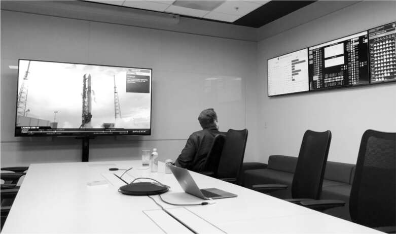
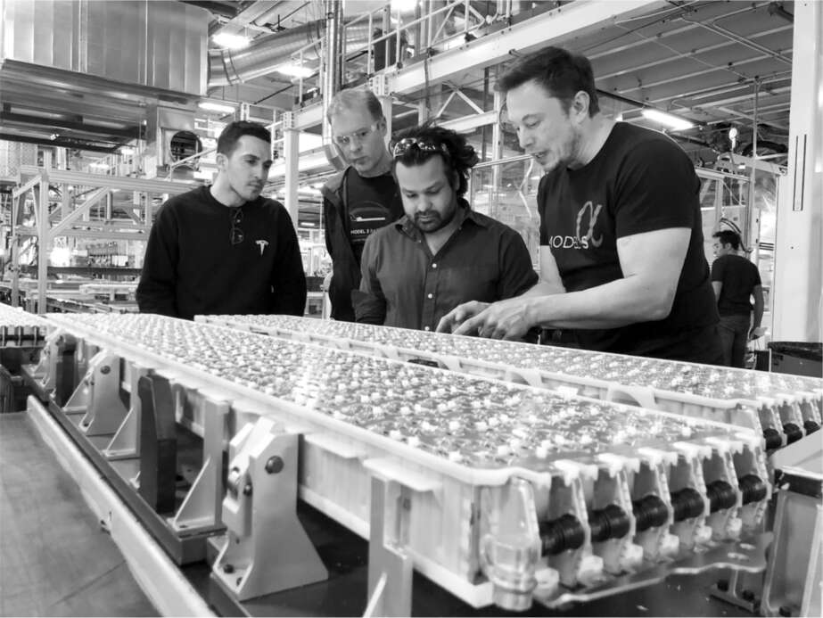

Anh có bị rối loạn lưỡng cực không?
Suy sụp vì chia tay với Amber Heard và tin cha mình có con với người phụ nữ mà ông nuôi nấng như con gái riêng, Musk trải qua những giai đoạn dao động giữa trầm cảm, đờ đẫn, phấn khích và năng lượng điên cuồng. Ông rơi vào trạng thái ủ rũ dẫn đến gần như hôn mê và tê liệt trầm cảm. Sau đó, như thể một công tắc được bật lên, ông trở nên phấn chấn và tái hiện lại những tiểu phẩm hài hước của Monty Python với những bước đi ngớ ngẩn và các cuộc tranh luận kỳ quặc, rồi bật cười khúc khích. Về mặt công việc và tình cảm, mùa hè năm 2017 đến mùa thu năm 2018 là khoảng thời gian khủng khiếp nhất trong cuộc đời ông, thậm chí còn tồi tệ hơn cả cuộc khủng hoảng năm 2008. “Đó là khoảng thời gian đau đớn nhất mà tôi từng trải qua,” ông nói. “Mười tám tháng điên loạn không ngừng. Nó đau đớn đến mức khó tin.”
Vào cuối năm 2017, ông có lịch trình tham gia cuộc họp báo cáo kết quả kinh doanh của Tesla với các nhà phân tích phố Wall. Jon McNeill, khi đó là chủ tịch của Tesla, thấy ông nằm trên sàn phòng họp với đèn tắt. McNeill bước tới và nằm xuống cạnh ông trong góc phòng. “Này anh bạn,” McNeill nói. “Chúng ta có một cuộc họp báo cáo kết quả kinh doanh.”
“Tôi không thể làm được,” Musk nói.
“Anh phải làm,” McNeill trả lời.
McNeill mất nửa tiếng để khiến ông di chuyển. “Ông ấy từ trạng thái hôn mê chuyển sang trạng thái mà chúng tôi có thể đưa ông ấy vào ghế, đưa những người khác vào phòng, giúp ông ấy hoàn thành phần phát biểu khai mạc, và sau đó hỗ trợ ông ấy,” McNeill nhớ lại. Khi cuộc họp kết thúc, Musk nói, “Tôi phải nằm xuống, tôi phải tắt đèn. Tôi chỉ cần một chút thời gian ở một mình.” McNeill cho biết cảnh tượng tương tự đã diễn ra năm hoặc sáu lần, bao gồm một lần ông phải nằm trên sàn phòng họp cạnh Musk để được ông chấp thuận thiết kế trang web mới.
Khoảng thời gian đó, Musk được một người dùng trên Twitter hỏi liệu ông có bị rối loạn lưỡng cực không. “Có,” ông trả lời. Nhưng ông nói thêm rằng ông chưa được chẩn đoán y tế. “Cảm xúc tiêu cực có liên quan đến những sự kiện tồi tệ, vì vậy có lẽ vấn đề thực sự là tôi quá mải mê với những gì tôi đăng ký.” Một ngày nọ, khi họ đang ngồi trong phòng họp của Tesla sau một trong những cơn của Musk, McNeill đã hỏi thẳng ông liệu ông có bị rối loạn lưỡng cực không. Khi Musk nói có lẽ là có, McNeill đẩy ghế ra khỏi bàn và quay sang nói chuyện trực tiếp với Musk. “Nghe này, tôi có một người họ hàng bị rối loạn lưỡng cực,” McNeill nói. “Tôi đã có kinh nghiệm gần gũi với điều này. Nếu anh được điều trị tốt và dùng thuốc đúng cách, anh có thể trở lại là chính mình. Thế giới cần anh.” Đó là một cuộc trò chuyện tích cực, McNeill nói, và Musk dường như có mong muốn rõ ràng thoát khỏi tình trạng tinh thần rối loạn của mình.
Nhưng điều đó đã không xảy ra. Cách ông ấy đối phó với các vấn đề tâm lý của mình, ông nói khi tôi hỏi, “chỉ là chịu đựng nỗi đau và đảm bảo rằng bạn thực sự quan tâm đến những gì bạn đang làm.”
Khi Model 3 bắt đầu lăn bánh khỏi dây chuyền sản xuất vào tháng 7 năm 2017 — một cách thần kỳ đáp ứng đúng thời hạn gấp rút mà Musk đã đặt ra — Tesla đã tổ chức một sự kiện náo nhiệt tại nhà máy Fremont để ăn mừng. Trước khi lên sân khấu, ông dự định vào một căn phòng nhỏ để trả lời câu hỏi từ một số ít nhà báo. Nhưng có điều gì đó không ổn. Tâm trạng ông u ám cả ngày, uống vài lon Red Bull để giữ tỉnh táo, rồi cố gắng thiền định, điều mà ông chưa từng làm nghiêm túc trước đây.
Franz von Holzhausen và JB Straubel đã cố gắng vực dậy tinh thần ông bằng một bài phát biểu khích lệ. Nhưng Musk dường như không phản ứng, mặt đờ đẫn, chán nản. “Tôi đã chịu đựng nỗi đau tinh thần khủng khiếp trong vài tuần qua”, ông nói sau đó. “Thực sự khủng khiếp. Tôi đã phải dùng hết sức lực của mình để có thể tham dự sự kiện Model 3 mà không trông giống như người đàn ông tuyệt vọng nhất.” Cuối cùng, ông tự ép mình tham gia buổi họp báo. Ông tỏ ra cáu kỉnh, rồi lại lơ đãng. “Xin lỗi vì hơi kiệm lời”, ông nói với các phóng viên. “Hiện tại tôi có rất nhiều điều phải suy nghĩ.”
Sau đó là lúc xuất hiện trước hai trăm người hâm mộ và nhân viên đang hò reo. Ít nhất là lúc đầu, ông đã cố gắng thể hiện một màn trình diễn tốt. Ông lái một chiếc Model 3 màu đỏ mới lên sân khấu, nhảy ra ngoài và giơ tay lên trời. “Mục tiêu của công ty này là tạo ra một chiếc xe điện thực sự tuyệt vời, giá cả phải chăng”, ông nói, “và cuối cùng chúng tôi đã làm được.”
Nhưng bài phát biểu của ông nhanh chóng chuyển sang một giọng điệu kỳ lạ. Ngay cả những người trong khán phòng cũng có thể nhận thấy rằng, bất chấp nỗ lực tỏ ra vui vẻ, ông đang ở trong một trạng thái rất tăm tối. Thay vì ăn mừng, ông cảnh báo về những thời điểm khó khăn phía trước. “Thách thức lớn đối với chúng tôi trong sáu đến chín tháng tới là làm thế nào để sản xuất một số lượng lớn xe”, ông nói ngập ngừng. “Thẳng thắn mà nói, chúng ta sắp bước vào địa ngục sản xuất.” Rồi ông bắt đầu cười khúc khích một cách điên cuồng. “Chào mừng! Chào mừng! Chào mừng đến với địa ngục sản xuất! Đó là nơi chúng ta sẽ ở trong ít nhất sáu tháng.”
Viễn cảnh đó, giống như tất cả những tấn bi kịch khủng khiếp, dường như đã lấp đầy ông bằng năng lượng đen tối. “Tôi mong muốn được làm việc cùng các bạn trên hành trình vượt qua địa ngục này”, ông nói với khán giả đang kinh ngạc. “Như người ta vẫn nói, nếu bạn đang đi qua địa ngục, hãy cứ tiếp tục.”
Ông đã ở đó. Và ông đã làm điều đó.
Trong những khoảng thời gian tăm tối về mặt cảm xúc, Musk lao vào công việc một cách điên cuồng. Và ông đã làm như vậy sau sự kiện tháng 7 năm 2017 đánh dấu sự khởi đầu của quá trình sản xuất Model 3.
Ông có một trọng tâm chính: đẩy mạnh sản xuất để Tesla sản xuất được năm nghìn chiếc Model 3 mỗi tuần. Ông đã tính toán chi phí, chi phí chung và dòng tiền của công ty. Nếu đạt được tỷ lệ đó, Tesla sẽ tồn tại. Nếu không, công ty sẽ hết tiền. Ông lặp lại điều đó như một câu thần chú với mọi giám đốc điều hành, và ông lắp đặt màn hình tại nhà máy hiển thị sản lượng xe và linh kiện theo từng phút.
Đạt được năm nghìn xe mỗi tuần sẽ là một thách thức rất lớn. Vào cuối năm 2017, Tesla chỉ sản xuất xe với tốc độ bằng một nửa con số đó. Musk quyết định rằng ông phải tự mình, theo nghĩa đen, đến các phân xưởng của nhà máy và dẫn dắt một đợt tăng tốc toàn diện. Đó là một chiến thuật — cá nhân lao vào cuộc chiến 24/7 với một đội ngũ những người cuồng tín cùng chí hướng — đã định hình nên cường độ điên cuồng mà ông yêu cầu ở các công ty của mình.
Ông bắt đầu với Gigafactory ở Nevada, nơi Tesla sản xuất pin. Người thiết kế dây chuyền tại đây đã nói với Musk rằng việc sản xuất năm nghìn bộ pin mỗi tuần là điều điên rồ. Tối đa họ chỉ có thể làm được một nghìn tám trăm. "Nếu anh đúng, Tesla sẽ phá sản," Musk nói. "Chúng ta phải đạt năm nghìn xe mỗi tuần hoặc không đủ bù đắp chi phí." Việc xây dựng thêm dây chuyền sẽ mất một năm nữa, vị giám đốc điều hành cho biết. Musk đã thay thế ông ta và đưa Brian Dow, người có tinh thần hăng hái mà Musk thích, vào vị trí lãnh đạo.
Musk trực tiếp phụ trách nhà máy, đóng vai trò như một vị tướng hừng hực khí thế. "Đó là một cơn lốc điên cuồng," ông nói. "Chúng tôi chỉ ngủ bốn hoặc năm tiếng, thường là ngay trên sàn nhà máy. Tôi còn nhớ mình đã nghĩ, 'Mình như đang ở bên bờ vực của sự tỉnh táo.' ” Các đồng nghiệp của ông cũng đồng tình.
Musk đã gọi thêm người hỗ trợ, bao gồm cả những cộng sự trung thành nhất của mình: Mark Juncosa, cộng sự kỹ thuật của ông tại SpaceX, và Steve Davis, người đứng đầu The Boring Company. Ông thậm chí còn nhờ đến người em họ trẻ tuổi James Musk, con trai của em trai Errol, vừa tốt nghiệp Berkeley và gia nhập đội Autopilot của Tesla với tư cách là một lập trình viên. "Tôi nhận được cuộc gọi từ Elon bảo đến sân bay Van Nuys sau một giờ," anh nói. "Chúng tôi bay đến Reno và tôi đã ở đó bốn tháng."
"Có hàng tỷ vấn đề," Juncosa nói. "Một phần ba số pin bị lỗi, và một phần ba số máy trạm cũng vậy." Họ tỏa ra làm việc trên các phần khác nhau của dây chuyền pin, đi từ trạm này sang trạm khác và xử lý sự cố bất kỳ quy trình nào làm chậm tiến độ. "Khi quá kiệt sức, chúng tôi sẽ đến nhà nghỉ ngủ bốn tiếng, rồi quay lại," Juncosa nói.
Omead Afshar, một kỹ sư y sinh từng học phụ ngành thơ ca, vừa được tuyển dụng để làm phụ tá cho Musk cùng với Sam Teller. Lớn lên ở Los Angeles, anh mang cặp sách đến trường tiểu học vì muốn giống cha mình, một kỹ sư gốc Iran. Anh đã làm việc vài năm trong việc thiết lập cơ sở vật chất cho một nhà sản xuất thiết bị y tế, và nhanh chóng gắn bó với Musk sau khi gia nhập Tesla. Cả hai đều nói hơi lắp bắp, che giấu một tư duy kỹ thuật. Vào ngày đầu tiên đi làm, sau khi thuê một căn hộ gần trụ sở chính của Tesla ở Thung lũng Silicon, anh đã bị cuốn vào guồng quay công việc và dành ba tháng tiếp theo làm việc tại Gigafactory pin Nevada, ngủ tại một nhà nghỉ 20 đô la một đêm gần đó. Bảy ngày một tuần, anh thức dậy lúc 5 giờ sáng, uống cà phê với chuyên gia sản xuất Tim Watkins, làm việc tại nhà máy đến 10 giờ tối, rồi uống một ly rượu vang với Watkins trước khi đi ngủ.
Có lúc Musk nhận thấy dây chuyền lắp ráp bị chậm lại tại một trạm, nơi các dải sợi thủy tinh được dán vào bộ pin bằng một robot đắt tiền nhưng chậm chạp. Các giác hút của robot liên tục làm rơi dải sợi và dán quá nhiều keo. "Tôi nhận ra rằng lỗi đầu tiên là cố gắng tự động hóa quy trình, đó là lỗi của tôi vì tôi đã thúc đẩy rất nhiều việc tự động hóa," ông nói.
Sau nhiều lần bực bội, Musk cuối cùng đã đặt một câu hỏi cơ bản: "Những miếng này để làm gì vậy?" Ông đang cố hình dung tại sao lại cần những miếng sợi thủy tinh giữa pin và sàn xe. Đội ngũ kỹ thuật nói với ông rằng chúng được đội ngũ giảm tiếng ồn yêu cầu để giảm rung động. Vì vậy, ông gọi cho đội ngũ giảm tiếng ồn, và họ nói với ông rằng yêu cầu này đến từ đội ngũ kỹ thuật để giảm nguy cơ cháy nổ. "Cứ như trong truyện tranh Dilbert vậy," Musk nói. Vậy nên ông yêu cầu họ ghi âm lại tiếng ồn bên trong xe khi không có miếng sợi thủy tinh và khi có. "Xem các anh có phân biệt được gì không," ông nói với họ. Họ không thể.
"Bước đầu tiên là phải đặt câu hỏi về các yêu cầu," ông nói. "Hãy làm cho chúng bớt sai lầm và ngớ ngẩn, bởi vì tất cả các yêu cầu đều có phần sai lầm và ngớ ngẩn. Và sau đó là xóa, xóa, xóa."
Cách tiếp cận tương tự cũng hiệu quả ngay cả với những chi tiết nhỏ nhất. Ví dụ, khi các bộ pin được hoàn thành ở Nevada, những nắp nhựa nhỏ được gắn vào các chấu cắm vào xe. Khi pin đến nhà máy lắp ráp xe Fremont, các nắp nhựa này được gỡ bỏ và vứt đi. Đôi khi, họ hết nắp ở Nevada và phải tạm dừng việc vận chuyển pin. Khi Musk hỏi tại sao lại có những chiếc nắp này, ông được cho biết chúng được yêu cầu để đảm bảo các chấu không bị cong. "Ai đặt ra yêu cầu đó?" ông hỏi. Đội ngũ nhà máy vội vàng tìm hiểu, nhưng họ không thể tìm ra cái tên nào. "Vậy thì bỏ chúng đi," Musk nói. Họ đã làm vậy, và hóa ra họ chưa bao giờ gặp vấn đề với việc chấu bị cong.
Mặc dù có tinh thần đồng đội giữa nhóm của Musk, ông có thể lạnh lùng và thô lỗ với những người khác. Vào 10 giờ tối một ngày thứ Bảy, ông nổi giận về một cánh tay robot lắp đặt ống làm mát vào pin. Việc căn chỉnh của robot bị lệch, làm gián đoạn quá trình. Một kỹ sư sản xuất trẻ tên là Gage Coffin được triệu tập. Anh rất hào hứng với cơ hội được gặp Musk. Anh đã làm việc cho Tesla được hai năm và đã dành mười một tháng trước đó sống xa nhà và làm việc bảy ngày một tuần tại nhà máy. Đó là công việc toàn thời gian đầu tiên của anh, và anh rất yêu thích nó. Khi anh đến, Musk gắt lên: "Này, cái này không thẳng hàng. Anh làm cái này à?" Coffin ngập ngừng trả lời bằng cách hỏi Musk ông đang nói đến cái gì. Mã hóa? Thiết kế? Công cụ? Musk tiếp tục hỏi: "Anh làm cái khỉ gì thế này?" Coffin, bối rối và sợ hãi, tiếp tục loay hoay để hiểu câu hỏi. Điều đó khiến Musk càng thêm hung hăng. "Anh là đồ ngu," ông nói. "Cút khỏi đây và đừng quay lại." Người quản lý dự án của anh đã kéo anh ra một vài phút sau đó và nói với anh rằng Musk đã ra lệnh sa thải anh. Anh nhận được giấy thôi việc vào thứ Hai đó. "Người quản lý của tôi bị sa thải một tuần sau tôi, và quản lý của anh ấy bị sa thải một tuần sau đó nữa," Coffin nói. "Ít nhất Elon cũng biết tên họ."
"Khi Elon tức giận, ông ấy thường nổi nóng, thường là với những người cấp dưới," Jon McNeill nói. "Câu chuyện của Gage khá điển hình cho hành vi của ông ấy, khi ông ấy không thể xử lý sự thất vọng của mình một cách hiệu quả." JB Straubel, người đồng sáng lập tốt bụng và dịu dàng hơn của Musk, rùng mình trước hành vi của Musk. "Nhìn lại thì có vẻ như những câu chuyện chiến tranh tuyệt vời," ông nói, "nhưng ở giữa lúc đó, nó thực sự kinh khủng. Ông ấy bắt chúng tôi sa thải những người đã là bạn bè thân thiết trong một thời gian rất dài, điều đó vô cùng đau đớn."
Musk đáp lại rằng những người như Straubel và McNeill quá do dự trong việc sa thải nhân viên. Khu vực đó của nhà máy hoạt động không hiệu quả. Linh kiện chất đống bên cạnh các trạm làm việc, và dây chuyền bị tắc nghẽn. "Cố gắng tử tế với một vài người," Musk nói, "thực ra là không công bằng với hàng tá người khác đang làm tốt công việc của họ và sẽ bị ảnh hưởng nếu tôi không khắc phục những điểm yếu này."
Ông đã dành ngày Lễ Tạ ơn đó tại nhà máy, cùng với một vài người con trai, bởi vì ông đã yêu cầu công nhân đến làm việc. Bất kỳ ngày nào nhà máy không sản xuất pin sẽ làm giảm số lượng xe Tesla có thể sản xuất.
Kể từ khi dây chuyền lắp ráp ra đời vào đầu những năm 1900, hầu hết các nhà máy đều được thiết kế theo hai bước. Đầu tiên, dây chuyền được thiết lập với công nhân thực hiện các nhiệm vụ cụ thể tại mỗi trạm. Sau đó, khi các vấn đề được giải quyết, robot và máy móc khác dần được đưa vào để đảm nhận một số công việc. Musk đã làm ngược lại. Với tầm nhìn về một nhà máy "tàu chiến ngoài hành tinh" hiện đại, ông bắt đầu bằng cách tự động hóa mọi nhiệm vụ có thể. "Chúng tôi có dây chuyền sản xuất tự động hóa khổng lồ sử dụng hàng tấn robot," Straubel nói. "Nhưng có một vấn đề. Nó không hoạt động."
Một đêm nọ, Musk đang đi dạo qua nhà máy pin Nevada cùng với nhóm của mình - Omead Afshar, Antonio Gracias và Tim Watkins - và họ nhận thấy sự chậm trễ tại một trạm làm việc, nơi một cánh tay robot đang gắn các cell pin vào một ống. Máy gặp sự cố khi kẹp vật liệu và căn chỉnh. Watkins và Gracias đến một chiếc bàn và thử làm thủ công. Họ làm việc đó đáng tin cậy hơn. Họ gọi Musk đến và tính toán cần bao nhiêu người để thay thế máy. Công nhân được thuê để thay thế robot, và dây chuyền lắp ráp di chuyển nhanh hơn.
Musk chuyển từ một người ủng hộ tự động hóa sang một nhiệm vụ mới mà ông theo đuổi với nhiệt huyết tương tự: tìm bất kỳ điểm nào trên dây chuyền bị tắc nghẽn và xem việc giảm tự động hóa có làm cho nó hoạt động nhanh hơn không. "Chúng tôi bắt đầu cắt robot ra khỏi dây chuyền sản xuất và ném chúng ra bãi đậu xe," Straubel nói. Vào một ngày cuối tuần, họ đi khắp nhà máy đánh dấu lên các máy móc cần loại bỏ. "Chúng tôi đã đục một lỗ trên tường nhà máy chỉ để di chuyển tất cả các thiết bị đó," Musk nói.
Trải nghiệm này đã trở thành một bài học, một phần trong thuật toán sản xuất của Musk. Luôn đợi đến cuối quá trình thiết kế - sau khi bạn đã xem xét tất cả các yêu cầu và loại bỏ các bộ phận không cần thiết - trước khi bạn áp dụng tự động hóa.
Đến tháng 4 năm 2018, nhà máy Nevada đã hoạt động tốt hơn. Thời tiết ấm lên một chút, vì vậy Musk quyết định ngủ trên mái nhà máy thay vì lái xe đến nhà nghỉ. Trợ lý của ông đã mua một vài chiếc lều, và bạn của ông, Bill Lee và Sam Teller, đã tham gia cùng ông. Sau khi kiểm tra các dây chuyền lắp ráp mô-đun và bộ pin cho đến gần 1 giờ sáng một đêm, họ lên mái nhà, nhóm một lò sưởi di động nhỏ và nói về thử thách tiếp theo. Musk đã sẵn sàng chuyển sự chú ý của mình sang Fremont.

Trong phòng họp Jupiter ở Fremont năm 2008, xem buổi ra mắt và số liệu sản xuất của Tesla

Kiểm tra bộ pin với Omead Afshar (ngoài cùng bên trái)